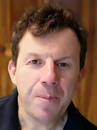
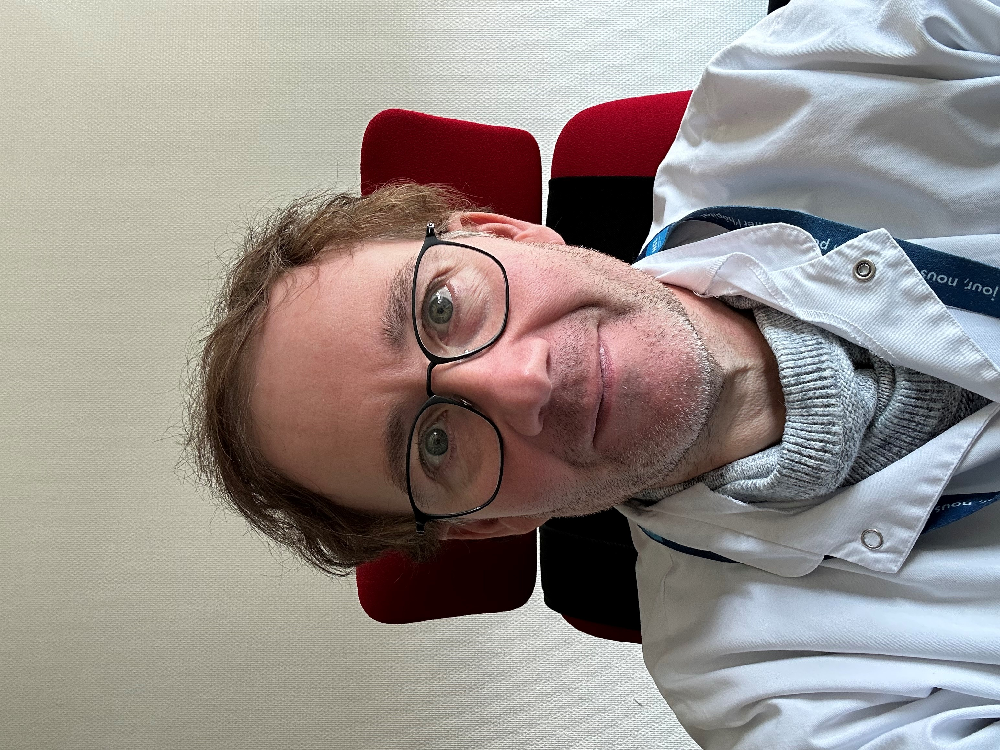

Comprendre et soigner les maladies auto-inflammatoires
Le CEREMAIA Lyon réunit médecine interne, rhumatologie pédiatrique et recherche fondamentale pour offrir aux patients un diagnostic précis, des traitements personnalisés et un accompagnement à chaque étape de leur parcours.
Un centre, une prise en charge complète
Soins spécialisés
Consultations adulte (Hôpital de la Croix-Rousse) et pédiatrique (HFME, Bron), hôpital de jour et hospitalisation.
Recherche de pointe
Laboratoire Inserm/CNRS I2BA au CIRI : tests fonctionnels, inflammasomes et médicaments first in class.
Diagnostic précis
Analyses génétiques et tests fonctionnels innovants pour identifier et caractériser les maladies rares.
Accompagnement
Éducation thérapeutique, soutien social et suivi personnalisé du patient et de ses proches.
L'équipe du CEREMAIA Lyon

Pr Pascal SèveChef de service · médecine interne
Dr Nicolas FournierMédecine interneLes fiches maladies
Cliquez sur une maladie pour accéder à sa fiche détaillée.
Besoin d'une consultation ?
Adultes, adolescents et enfants : prise de rendez-vous en ligne ou par téléphone.